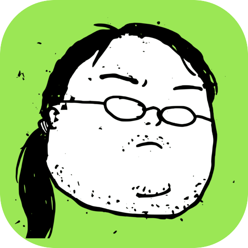

沿着现有实现、标准库、平台原生能力和已安装依赖逐级寻找答案。
复用 · 标准库 · 原生能力
PONYTAIL
找到最小正确实现，然后停手
优先复用现有代码、标准库和平台能力，删除无收益的抽象，并用专门的审查与审计模式控制工程复杂度。
6 个专用模式YAGNI 优先跨宿主自动启用
01 / 核心能力
少写代码，但不省略正确性
理解真实调用链后选择最短路径，安全、校验和边界条件仍完整保留。
从当前差异中找出不必要依赖、重复工具、推测性抽象和无用灵活性。
Diff 审查 · 删除优先审计整个代码库，汇总刻意留下的简化项，并展示减少的代码与成本。
审计 · 技术债 · 收益02 / 判断顺序
沿最短可行路径停止
- 01确认需求真实
没有当前价值的推测性能力不实现。
- 02复用已有能力
优先选择仓库、标准库和平台已有方案。
- 03留下最小检查
非平凡逻辑用一个可运行检查守住行为。
03 / 示例请求
可以直接这样说
“使用 Ponytail 模式完成这个开发任务。”
“审查当前改动，找出可以删除的过度设计。”
“全仓审计复杂度并按收益排序。”